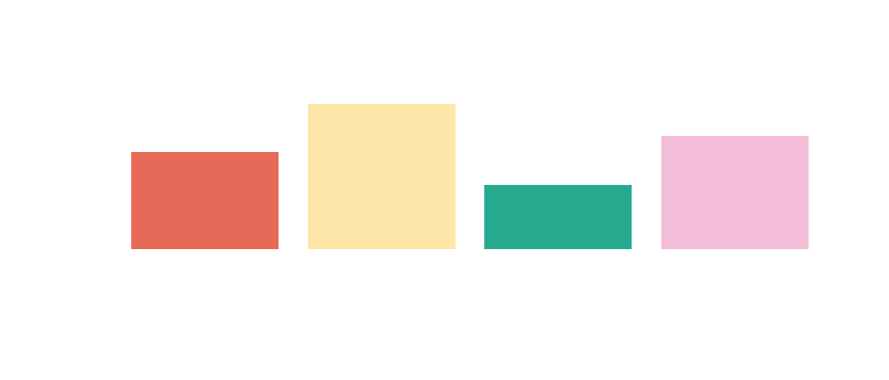
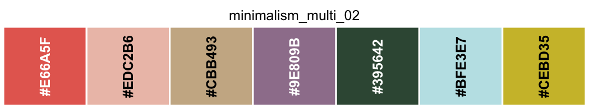
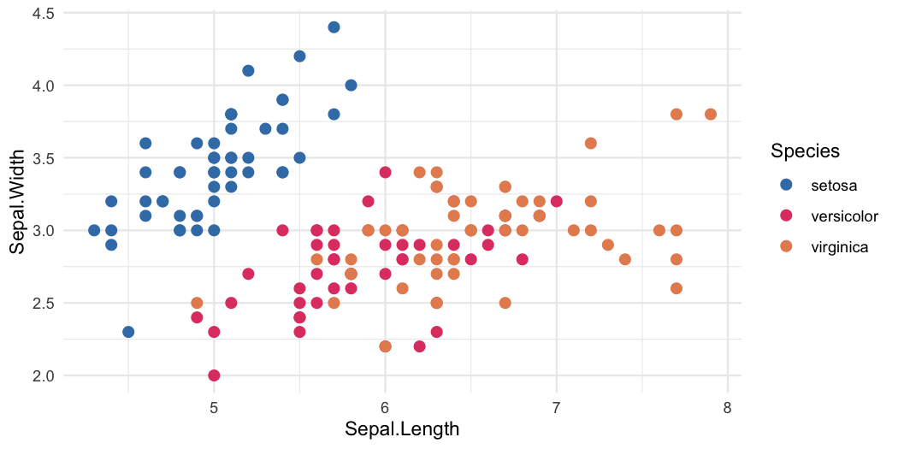
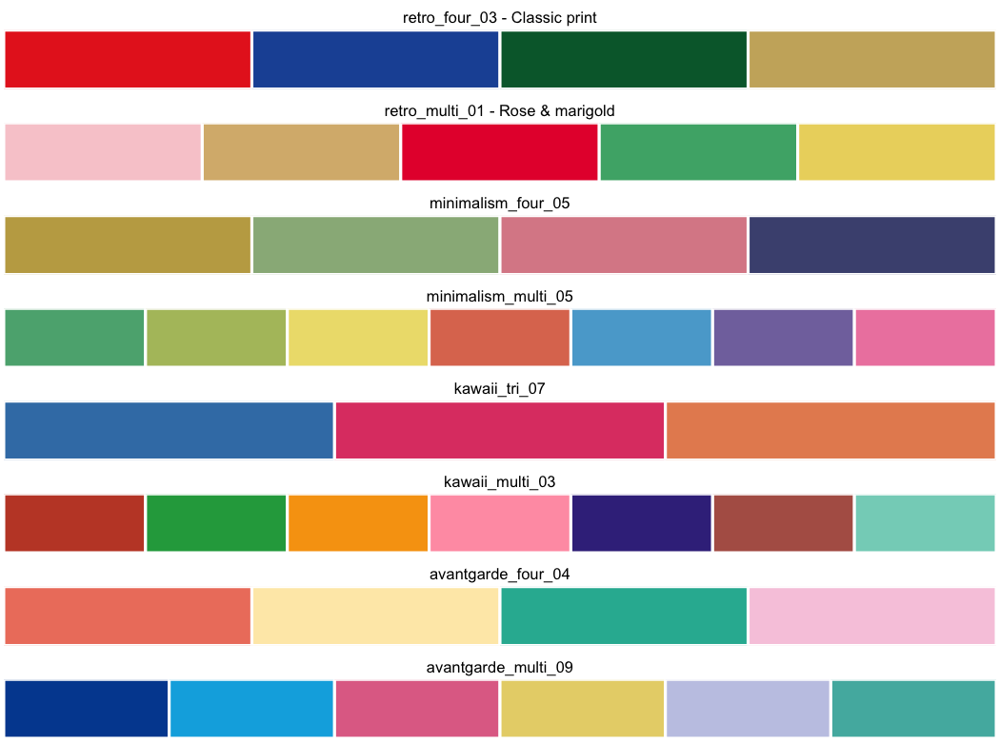

149 curated colour palettes in four collections: Retro, Minimalism, Kawaii and Avant Garde.
Every palette is an exported character vector of hex colours, so the API is just the palette’s name.
Available for R and Python.
Installation
# install.packages("pak")
pak::pak("paulgp/japanesecolors")Usage
library(japanesecolors)
kawaii_tri_07
#> [1] "#3D7EB4" "#DF4472" "#E68C5F"Which means palettes work anywhere R takes colours:

show_palette(minimalism_multi_02)
ggplot2
library(ggplot2)
ggplot(iris, aes(Sepal.Length, Sepal.Width, colour = Species)) +
geom_point(size = 2.5) +
scale_colour_japanesecolors("kawaii_tri_07") +
theme_minimal()
scale_fill_japanesecolors() and scale_color_japanesecolors() work the same way, or pass the vector straight to scale_colour_manual(values = kawaii_tri_07).
The collections
| Collection | Palettes | Provisional |
|---|---|---|
| Retro | 55 | 7 |
| Minimalism | 28 | 0 |
| Kawaii | 30 | 2 |
| Avant Garde | 36 | 4 |

Browsing
IDs are <collection>_<type>_<nn>, where type is bi, tri, four or multi. They are stable API.
palettes("kawaii", type = "tricolor")[, c("id", "n_colors", "status")]
#> id n_colors status
#> 1 kawaii_tri_01 3 transcribed
#> 2 kawaii_tri_02 3 transcribed
#> 3 kawaii_tri_03 3 transcribed
#> 4 kawaii_tri_04 3 transcribed
#> 5 kawaii_tri_05 3 transcribed
#> 6 kawaii_tri_06 3 transcribed
#> 7 kawaii_tri_07 3 transcribed
#> 8 kawaii_tri_08 3 transcribed
#> 9 kawaii_tri_09 3 transcribed
#> 10 kawaii_tri_10 3 transcribed
#> 11 kawaii_tri_11 3 transcribed
#> 12 kawaii_tri_12 3 transcribed
#> 13 kawaii_tri_13 3 transcribed
#> 14 kawaii_tri_14 3 transcribed
#> 15 kawaii_tri_15 3 transcribed
#> 16 kawaii_tri_16 3 transcribed
#> 17 kawaii_tri_17 3 transcribed
#> 18 kawaii_tri_18 3 transcribed
#> 19 kawaii_tri_19 3 review
# find one big enough for seven groups
palette_names(n = 7)
#> [1] "minimalism_multi_02" "minimalism_multi_05" "minimalism_multi_06"
#> [4] "kawaii_multi_03"
# look up by ID when the palette is chosen at runtime
get_palette("minimalism_multi_02")
#> [1] "#E66A5F" "#EDC2B6" "#CBB493" "#9E809B" "#395642" "#BFE3E7" "#CEBD35"The visual gallery of all 149 palettes is on the package website.
Python
The same palettes, generated from the same canonical data, are available for matplotlib:
import japanesecolors as jc
jc.kawaii_tri_07 # ['#3D7EB4', '#DF4472', '#E68C5F']
plt.bar(range(3), y, color=jc.kawaii_tri_07)
jc.set_palette("avantgarde_four_04") # default colour cycle
jc.register_cmaps() # then cmap="jc:retro_multi_01"See python/README.md. A test asserts the R and Python packages carry identical colour values.
Provenance
Colour values were manually transcribed from the printed RGB labels in Japanese Color Matching, edited and published by SendPoints (Sendpoints Publishing Company Limited), 2022, ISBN 978-988-760-879-0. Hex is computed from those triplets; nothing was sampled from photographs or converted from CMYK, and no value was adjusted because another colour looked more plausible.
japanesecolors is an independent, unaffiliated project. It is not associated with, licensed by, endorsed by or approved by SendPoints. It distributes this project’s transcription of RGB/hex colour values and its own metadata — not the book’s text, layouts, photographs, advertisements or other artwork — and is no substitute for the book itself.
The MIT licence covers this package’s code, metadata and documentation. It confers no rights in the source work.